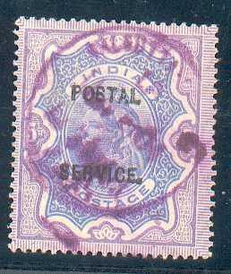
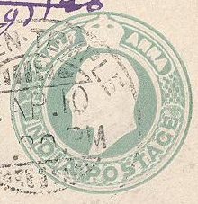
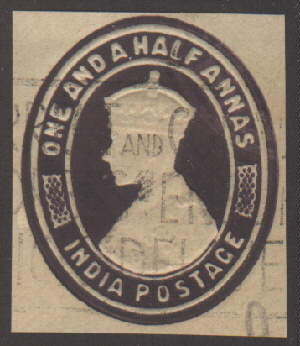
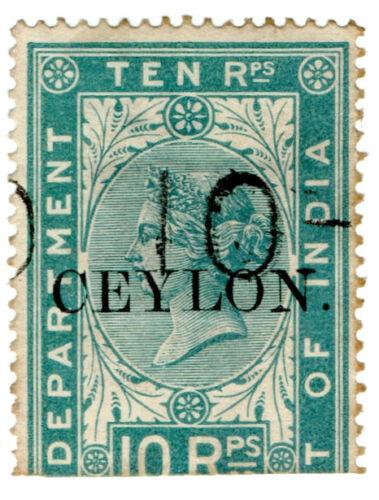

Note: on my website many of the
pictures can not be seen! They are of course present in the
catalogue;
contact me if you want to purchase it.
Postage stamps overprinted with "POSTAL SERVICE" are fiscal stamps. According to "Stamps of India" by J.Cooper, the indicated the amount of customs duty to be collected on foreign parcels. Examples:

The following values exist with overprint
"POSTAL SERVICE";
on Queen Victoria stamps (1895): 1/2 a green,
'ONE ANNA' on 9 p lilac, 'ONE ANNA' on 9 p red, 1 a brown, 2 a
blue, 2 a violet, 4 a olive, 8 a lilac, 1 R red and green, 2 R
brown and red, 3 R green and brown, 5 R violet and blue;
on King Edward VII stamps (1904): 1/2 a green, 1
a red, 2 a violet, 4 a olive, 8 a violet, 1 R red and green.
I have seen other postage stamps of Queen Victoria with several
overprints. I have seen 'Estate.'and 'High Court'. Also I have
seen overprints with 'Municipal' or a large 'M' in a circle (used
for the same municipal purposes as well). The overprints 'TIMES
OF INDIA.' and 'Bombay Gazette' were apparently made for
newspaper purposes.
"Bombay Gazette" overprint.
Stamp of India used in Aden:
Examples:
(Reduced sizes)
'ONE ANNA' on 1 1/2 a blue cut


Cut from envelope with image of King George VI
4 a violet 1 R violet 4 R violet
These stamps are rare. They also exist with overprint "COURT FEE".
Examples (used stamps are always cut into two halves):
1 a green 2 a red 4 a blue 8 a brown 1 R grey 2 R 8 a orange 5 R brown 10 R green 14 R 4 a violet 25 R violet 28 R 8 a green 50 R red

These stamps exists with overprint "CEYLON." to be used
in Ceylon.
(reduced sizes)
1 a green 2 a red 4 a blue 8 a brown 1 R grey 2 R yellow (1900, different portrait of the Queen) 2 R 8 a orange 5 R brown 10 R green 25 R violet 50 R red Surcharged '2 RUPEES' on 2 R 8 a orange (1899)
(Reduced size)
1 a green 2 a red 4 a blue 8 a brown 1 R grey 2 R orange 5 R brown 10 R green 25 R violet 50 R red Surcharged '2 TWO' on 8 a brown 'FOUR ANNAS' on 1 R grey
The values 2 R, 5 R, 10 R, 25 R and 50 R seem to exist with a 'OHMS' overprint (official stamps), but I have never seen them.
Some fiscal stamps (1 a, 2 a and 4 a) were also overprinted with "TELEGRAPH." in 1881 and 1904.
4 a Special Adhesive stamp with "TELEGRAPH." overprint.
Here another "TELEGRAPH" overprint with accents on the
"E"s: forgery? I've also seen the 2 a with the same
overprint.
"TELEGRAPH 1 ANNA" on 4 R, here with
"SPECIMEN" overprint.
Forged "TELEGRAPH" overprint made by the forger Francois Fournier (reduced size).
Lady Mintos fete, Calcutta January 1907, cinderella issued for the birthday of lady Minto:
Reduced size.
I've seen another label with a map of India and inscription 'LADY MINTO'S FETE CALCUTTA JANUARY 1907' 1 Rupee, in the colors black, green (sea) and red (India). A similar label exists in blue with the portrait of a man (Lady Minto's husband?) also in the value 4 a (see images above).
Bombay Presidency War & Relief Fund Women's Branch 1/2 a blue
label

{kind=link}
{kind=link}
{kind=link}
{kind=link}
{kind=link}